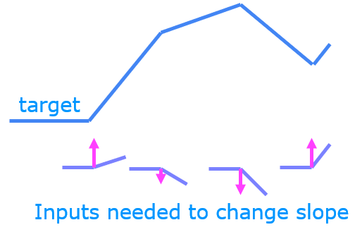
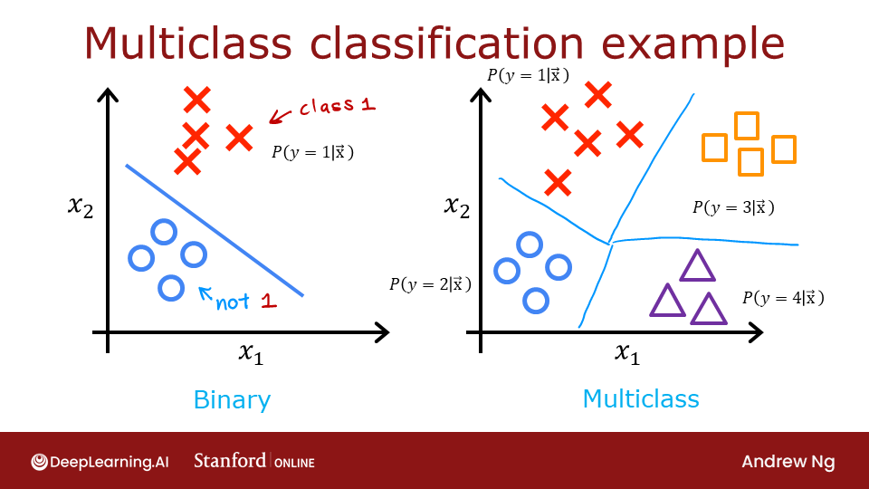
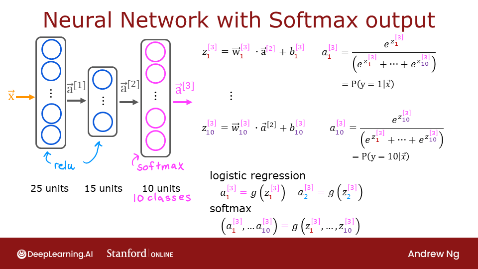
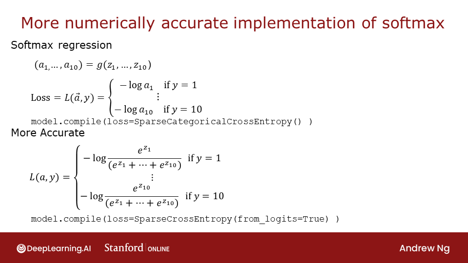
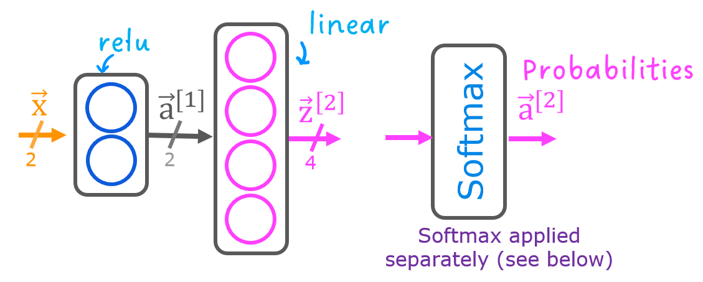

Hàm kích hoạt, Softmax & phân loại đa lớp
Tại sao mạng nơ-ron cần phi tuyến, vì sao ReLU thắng sigmoid ở lớp ẩn, và cách nhận dạng đủ 10 chữ số thay vì chỉ 0 và 1.
Các hàm kích hoạt
| Tên | Công thức | Miền giá trị | Dùng khi |
|---|---|---|---|
| Linear | \(g(z) = z\) | \((-\infty, \infty)\) | Đầu ra hồi quy, \(y\) có thể âm (ví dụ: thay đổi giá cổ phiếu) |
| Sigmoid | \(g(z) = \frac{1}{1+e^{-z}}\) | \((0, 1)\) | Đầu ra phân loại nhị phân |
| ReLU | \(g(z) = \max(0, z)\) | \([0, \infty)\) | Lớp ẩn (mặc định) · đầu ra hồi quy \(y \ge 0\) (giá nhà) |
| Softmax | xem bên dưới | vector xác suất | Đầu ra phân loại đa lớp |
Vì sao ReLU phổ biến ở lớp ẩn?
- Tính nhanh: chỉ là một phép so sánh, không cần hàm mũ.
- Gradient không “tắt”: sigmoid phẳng ở hai đầu, đạo hàm gần 0 → gradient descent rất chậm (vanishing gradient). ReLU chỉ phẳng ở một phía.
Vì sao cần hàm phi tuyến?
Nếu mọi lớp đều dùng activation tuyến tính, cả mạng chỉ là một hàm tuyến tính: \(\mathbf{W}_2(\mathbf{W}_1\mathbf{x} + \mathbf{b}_1) + \mathbf{b}_2 = \mathbf{W}'\mathbf{x} + \mathbf{b}'\). Bao nhiêu lớp cũng không hơn hồi quy tuyến tính. Lab ReLU minh hoạ: ghép nhiều đoạn ReLU (mỗi nơ-ron “bật” ở một điểm khác nhau) để xấp xỉ một hàm cong từng khúc.

Mạng toàn linear + đầu ra sigmoid tương đương đúng một logistic regression.
Phân loại đa lớp
Khi \(y \in \{0, 1, \dots, N-1\}\), ví dụ nhận dạng chữ số 0–9, ta cần mô hình trả về xác suất cho mỗi lớp.

Hàm Softmax
Lớp đầu ra có \(N\) nơ-ron, cho ra \(N\) số thực \(z_1, \dots, z_N\) (gọi là logits). Softmax biến chúng thành phân phối xác suất:
Mọi \(a_j \in (0, 1)\) và \(\sum_j a_j = 1\). Khi \(N = 2\), softmax rút gọn về đúng logistic regression.
def my_softmax(z):
ez = np.exp(z)
a = ez / np.sum(ez)
return aHàm mất mát: cross-entropy

Mất mát nhỏ khi \(a_y\) gần 1, lớn khi \(a_y\) gần 0. Trong TensorFlow:
SparseCategoricalCrossentropy: nhãn là số nguyên (ví dụy = 3).CategoricalCrossentropy: nhãn là one-hot (ví dụ[0,0,0,1,0,…]).
Cách cài đặt chuẩn xác về số học
Cách “hiển nhiên” là đặt activation='softmax' ở lớp cuối. Cách được khuyến nghị là để lớp cuối linear và báo cho hàm loss biết đầu vào là logits:
model = Sequential([
Dense(25, activation='relu'),
Dense(15, activation='relu'),
Dense(10, activation='linear'), # trả về logits, KHÔNG softmax
], name="my_model")
model.compile(
loss=tf.keras.losses.SparseCategoricalCrossentropy(from_logits=True),
optimizer=tf.keras.optimizers.Adam(learning_rate=0.001),
)
model.fit(X, y, epochs=40)
logits = model.predict(X_test)
probs = tf.nn.softmax(logits).numpy() # nếu cần xác suất
yhat = np.argmax(logits, axis=1) # nếu chỉ cần lớp: argmax trên logits là đủ
Tính \(e^{z}\) với \(z = 1000\) bị tràn số; tính \(\log\) của một số rất gần 0 mất độ chính xác. Khi loss nhận trực tiếp \(z\), nó dùng công thức tương đương ổn định: \(-\log a_y = -z_y + \log\sum_k e^{z_k}\), với thủ thuật trừ \(\max z\) trước khi lấy mũ (log-sum-exp). Bản my_softmax ở trên an toàn hơn nếu viết ez = np.exp(z - np.max(z)) — kết quả không đổi vì tử và mẫu cùng nhân \(e^{-\max z}\).
Bài thực hành: nhận dạng chữ số 0–9
Practice Lab C2_W2 dùng 5000 ảnh 20×20 (400 đặc trưng), mạng 400 → 25 (ReLU) → 15 (ReLU) → 10 (linear), loss SparseCategoricalCrossentropy(from_logits=True), Adam với learning rate 0.001, 40 epoch. Kết quả: chỉ sai khoảng 15/5000 ảnh trên tập huấn luyện.

- Multi-class (mỗi ảnh đúng một lớp) ≠ multi-label (một ảnh có thể chứa cả xe hơi, người, đèn giao thông). Multi-label dùng \(N\) nơ-ron sigmoid độc lập + binary cross-entropy, không dùng softmax.
- Leaky ReLU \(\max(0.01z, z)\): tránh nơ-ron “chết” (luôn ra 0 và không bao giờ học lại được).
- GELU, SiLU/Swish \(z \cdot \sigma(z)\): phiên bản trơn của ReLU, dùng trong Transformer (GPT, BERT…).
- tanh: giống sigmoid nhưng miền \((-1, 1)\), tâm tại 0; hay gặp trong RNN/LSTM.
- Softmax với nhiệt độ \(a_j \propto e^{z_j/T}\): T nhỏ → phân phối “nhọn” (chắc chắn), T lớn → phân phối “phẳng” (đa dạng). Chính là tham số
temperaturekhi sinh văn bản bằng LLM.
Ghi nhớ
- Lớp ẩn: ReLU. Lớp ra: sigmoid (nhị phân), linear (hồi quy), linear +
from_logits=True(đa lớp). - Softmax: \(a_j = e^{z_j} / \sum_k e^{z_k}\); loss = \(-\log a_y\).
- Không có activation phi tuyến thì mạng sâu cũng chỉ là mô hình tuyến tính.
Tự kiểm tra
z = [2, 1, 0]. Tính softmax.
\(e^2 = 7.39, e^1 = 2.72, e^0 = 1\), tổng 11.11 → [0.665, 0.245, 0.090].
Cộng thêm 100 vào mọi z thì softmax thay đổi thế nào?
Không đổi. Softmax bất biến khi cộng cùng một hằng số vào mọi logit — chính là lý do có thể trừ \(\max z\) để ổn định số học.
Dự đoán giá nhà (luôn dương): lớp đầu ra dùng activation gì?
ReLU (hoặc linear). Không dùng sigmoid vì giá không nằm trong (0, 1).